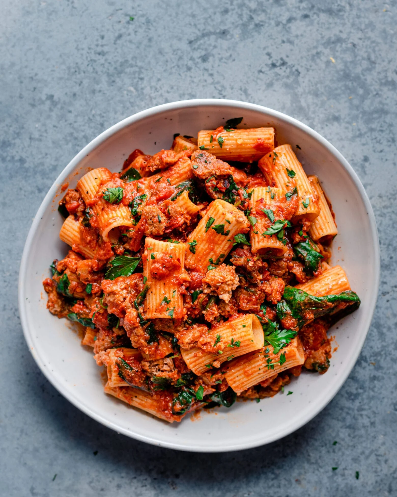

Home
Pasta

Description
This sumptuous pasta dish presents a robust tomato-based sauce, richly seasoned and studded with tender, crumbled pieces of savory meat. The sauce clings lovingly to the ridges of perfectly cooked rigatoni, ensuring a flavorful experience in every forkful. Fresh, verdant flecks of parsley are sprinkled atop, adding a burst of color and a fresh herbal note that cuts through the richness of the sauce. It's a hearty, comforting meal that exemplifies the rustic charm of traditional Italian cuisine.
Ingredients
- Sauce
- Rigatoni pasta
- Garlic
- Ground meat
- Fresh parsley, chopped
- Salt and pepper to taste
- Red pepper flakes (for a bit of heat, if desired)
- Parmesan cheese, grated (optional for garnish)
- Onion, finely diced
- Herbs such as oregano or basil (either fresh or dried)
Steps
- Boil the rigatoni pasta in salted water until al dente, then drain.
- In a pan, brown the ground meat, season with salt and pepper, then set aside.
- In the same pan, sauté onions until soft, add garlic and cook until fragrant.
- Return meat to the pan, add tomato sauce and herbs, and simmer for 15 minutes.
- Toss the cooked pasta with the sauce, adding pasta water if needed for consistency.
- Garnish with chopped parsley and grated Parmesan cheese before serving.